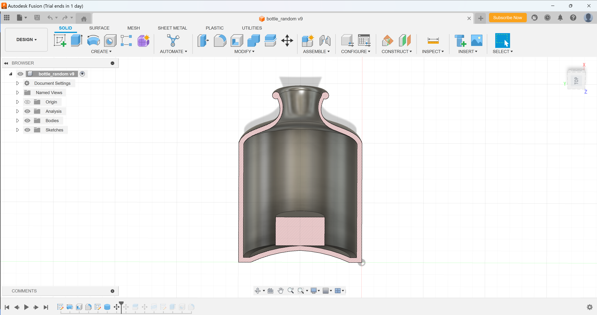

Week 5
3D design & printing
Assignment Prompt
-
Design and print a small object that could not be (easily) made by subtractive methods. Upload your 3D model file, STL file, and sliced gcode file to your documentation.
-
Scan something using a photogrammetry, LIDAR, or other application.
-
Process
-
For the 3D printing assignment I tried a lot of random things, but only one of them worked. Thanks to Nathan and Bobby for some 3D printing help. The model I eventually settled with was a lazy man's "ship in a bottle". For this I just drew an xz cross section of the bottle in fusion and then revolved it to get the file we have below, as well as what is imaged. I then drew a circle with a radius bigger than the neck of the bottle and extruded it, then moved it to just barely touch the bottem of the bottle. Then the cross section looks like the image below. I then used transparent petg filament and prusa slicer to send the print. An image of the cad and downloadable files for the cad, stl file, and sliced gcode, are below.

Download my STL file
Download my gcode file
Download my CAD file -
For 3D photo scanning, I used the revopoint. I scanned anything I could that would work, which was initially nothing. At first, I tried to scan a potentiometer which admittedly was quite small. Turns (rip) out that it was actually too small, and the scanner did not like it, at all. I then tried to scan a screwdriver, but I think this was too asymmetrically shaped. I then tried to scan my wallet, again I think there was the same problem. I THEN tried to scan Bobby's first model of phone holder, and thankfully... that did not work either. I then just grabbed the needle holder, the strawbery, by the sewing machine and that mostly worked. I used color scanning as well. I unfortunately don't have photos of this, ironically, but I have the scan files. Enjoy.
Download my revopoint scan mesh
Download my revopoint point cloud
Photos


Files
-
Click the links below to download.
-
Click the links below to download.